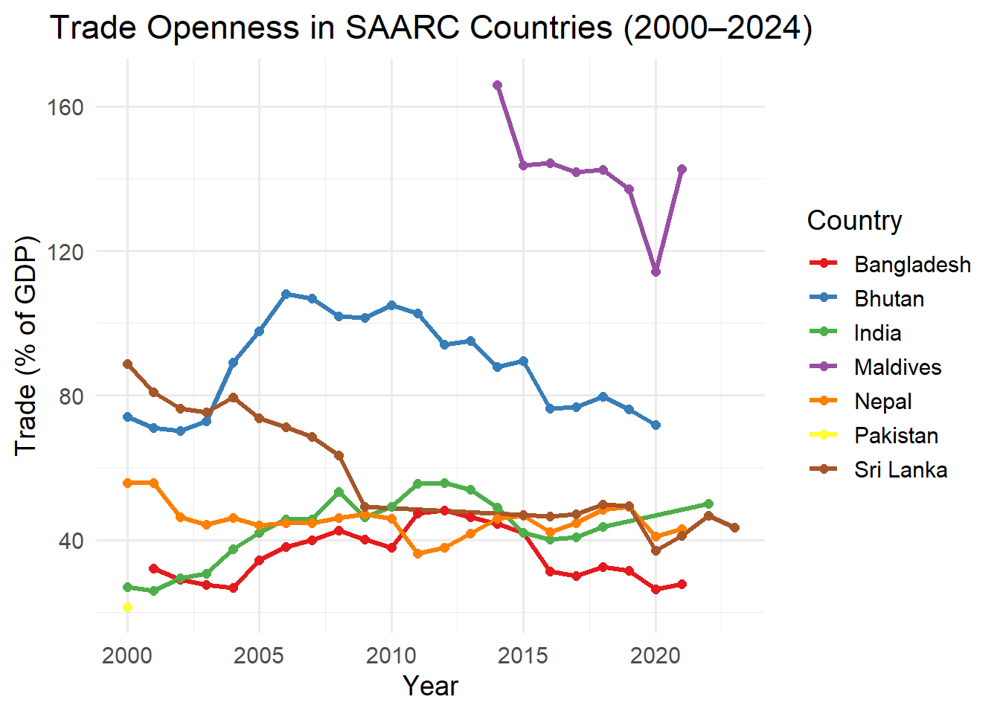
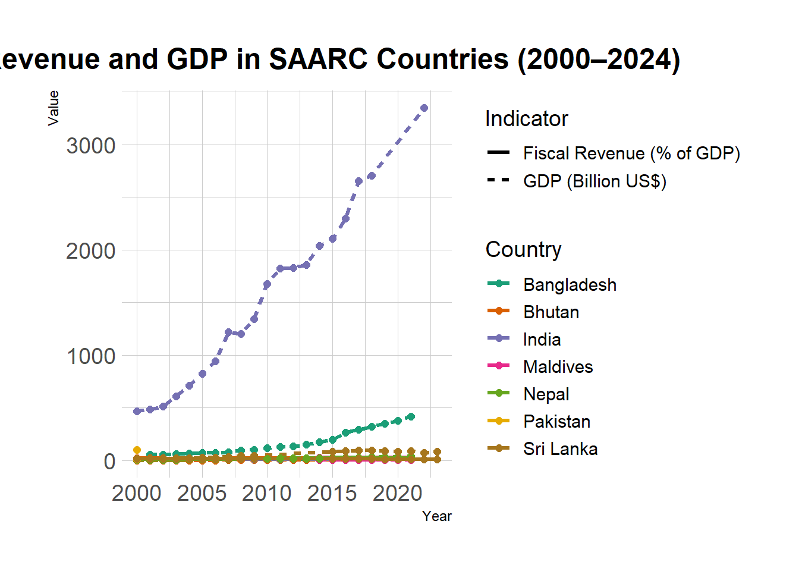

Fiscal Balance, Trade Openness, and GDP in SAARC Countries (2000–2024)

Summary This project investigates the trends in fiscal balance, trade openness, and GDP among SAARC countries from 2000 to 2024 using World Bank WDI data. The analysis focuses on Afghanistan, Bangladesh, Bhutan, India, Maldives, Nepal, Pakistan, and Sri Lanka.
Key Insights:
Trade openness has expanded in several countries—most notably India and Bangladesh—indicating stronger economic integration.
Fiscal revenue patterns differ, reflecting varying government capacities and policies.
GDP growth is uneven, with countries like India showing sustained growth, while others such as Afghanistan and Nepal exhibit volatility.
These observations serve as a foundation for deeper policy discussion, especially around how fiscal strategies and international trade engagement affect economic performance in developing regions.